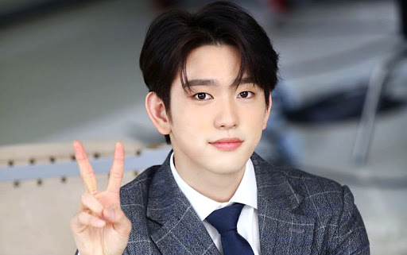

Park Jin-young (born September 22, 1994), referred to as Jinyoung, is a South Korean singer, songwriter, actor, record producer and dancer.He is a member of the boy band Got7 and boy band duo JJ Project. He made his acting debut in the drama Dream High 2 (2012) followed by supporting roles in When a Man Falls in Love (2013), This is My Love (2015), Legend of the Blue Sea (2016-2017) and as main role in He Is Psychometric (2019). He made his film debut in the independent film A Stray Goat (2016).
Name: Jin Young
Hangul: 진영
Birth Name: Park Jin-Young (박진영)
Born: September 22, 1994
Birthplace: Changwon, South Korea
Height: 178cm
Blood Type: O
Education: Kyunggi High School
Instagram: jinyoung_0922jy
Member of boy band "GOT7".
The Legend of the Blue Sea | Pooreun Badaui Junsul (SBS / 2016-2017) - Heo Joon-Jae (young)
School of Magic | Masulhakgyo (Naver TV-JTBC / 2017) - Lee Na-Ra
He is Psychometric | Saikometeuri Geunyeoseok (tvN / 2019) - Lee An
Melting Me Softly | Nal Nokyeojuo (tvN / 2019) - Jang Ho-Shin (ep.14)